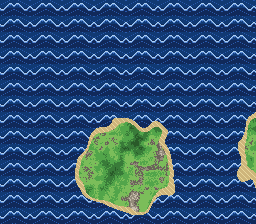

|
OpenSNES
Modern Open-Source SNES Development SDK
|
|
OpenSNES
Modern Open-Source SNES Development SDK
|
An archipelago of 1280x896 pixels drawn with 1,433 distinct 8x8 characters, scrolled in all eight directions. A tilemap entry names 1,024 characters at most: the whole set never fits VRAM, and it does not need to. The screen never shows more than 389 of them, and the tilering module keeps those in a ring of 640 character slots, loading each column and row as it comes into view.

| Button | Action |
|---|---|
| (none) | The camera flies a fixed course on its own: up, across, diagonals, home |
| D-Pad | Take the camera (2 px a frame) |
| B (held) | Fast: 7 px a frame |
| START | Give the course back |
A background tilemap entry is 16 bits: 10 for the character, 3 for the palette, priority and the two flips. With sprites and a status bar taking their share of the 64 KB of VRAM, a 4 bpp background usually gets 512 to 768 characters. The archipelago has 1,433 once mirrored copies are merged (opensnes-tilering inspect res/archipelago.png):
The converter tried every position of a 33x29 window (what a 256x224 screen shows at any scroll): at most 389 distinct characters in view, at most 26 new ones in a row that comes in, 23 in a column.
The map is converted with its own numbering: each character once, numbered by first appearance from the bottom row up. The module keeps 640 slots at VRAM $0000-$27FF (RING_SLOTS). Each slot counts the cells of the window that show it. When the camera crosses a column, the column that leaves releases its slots, the column that comes in takes its own; a character not in the ring takes the next free slot from a cursor that goes round. A slot at 0 keeps its character: if the camera comes back first, nothing is sent.
The tilemap is 64x32 entries at $3000. Map cell (x, y) lives at tilemap cell (x mod 64, y mod 32); the 33x29 cells in view never collide. Each frame the module writes the column (one or two VRAM queue entries) and the row (two) that came in.
The build converts res/archipelago.png with the settings file beside it (tool = "opensnes-tilering").
The course is 1,052 frames. The example keeps what it measured in tr_* variables, which the tests read (testing/manifests/scrolling_tile_ring*.toml, testing/tile_ring_budget.py):
| staging (default) | direct (tr_direct = 1) | |
|---|---|---|
| new characters in a frame, at most | 21 | 21 |
| VRAM queue entries in a frame, at most | 5 | 22 |
| flush, worst frame (luna) | 7,994 master cycles | 19,270 |
| with the NMI handler, share of the NTSC blank (50,468) | 28 % | 51 % |
| share of the PAL blank (118,668) | 12 % | 21 % |
Staging copies the frame's new characters to a WRAM buffer (DMA from ROM, outside the blank), so they leave in one transfer per run of consecutive slots; direct sends each run of characters from ROM, without the copy and the 2 KB of RAM, at about 80 bytes of the blank per extra transfer. tileRingCost(&ring, 7, 0) says 23 characters at most for a frame at 7 px across, tileRingCost(&ring, 5, 5) 49 for the diagonal: the converter's figures, an upper bound the course does not reach.
res/archipelago.png is invented, drawn by devtools/art_assets/tile_ring.py from a fixed seed: a sea on a mirrored 32x16 motif (a handful of characters for the whole sea) and six islands whose grass and rock are value noise, so that nearly every land character is distinct.
Then open tile_ring.sfc in luna (or any SNES emulator).
console, background, input, tilering, vramqueue